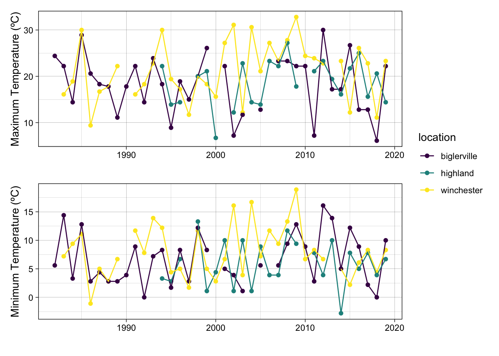
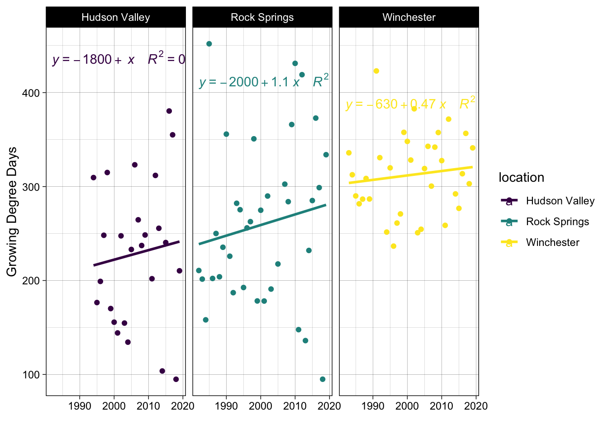
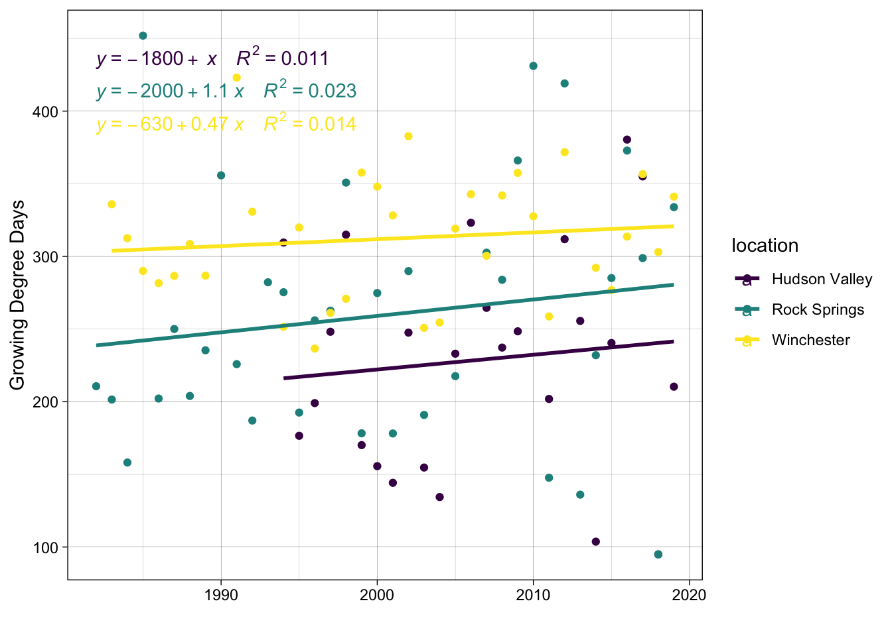
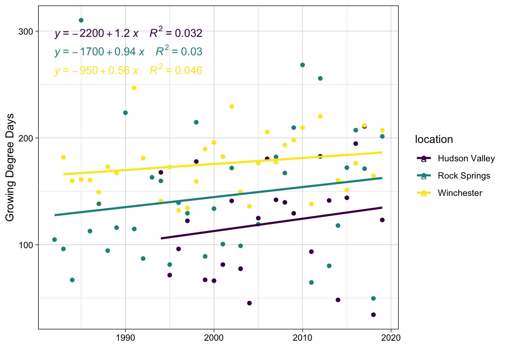
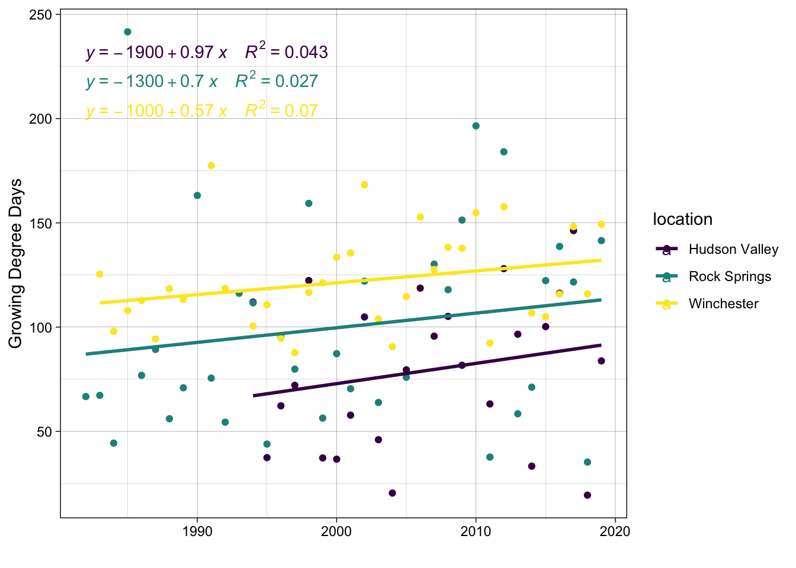

Project Overview
Deciduous trees, including apple, have been blooming earlier, and it is suspected that this is due to increasing late winter and early spring temperatures. When trees bloom in April rather than early to mid-May, they are at increased risk for late spring frost killing the blooms (Hoffmann and Rath 2013).
We have already seen early bloom affect crop yields, which greatly impacts growers, consumers, and the food industry at large. Tart cherries, which go through a similar growing cycle as apples, are an example of the risk of early bloom and late spring frost (Chapman and Catlin 1976). In 2012, Michigan tart cherry growers harvested under 12 million pounds of fruit, compared to the usual 158 million pounds (Higgins 2019). The trees broke dormancy 5 weeks early and suffered a harsh frost. With this severe decrease in yield, many growers are dealing with the financial impact, and soon, consumers will feel the loss of these important foods as well (Wolfe et al. 2018).
In this project, I aimed to investigate temperature patterns over the past 36 years in the Mid-Atlantic region and analyze the relationships between temperature averages, growing degree days1, and full bloom2 dates for the Golden Delicious apple.
Study Area
Data Curation and Preperation
Data was gathered from… - 4 vs 7.22 vs 9 degrees
Linear Regression Analysis
Closing Thoughts

Call:
lm(formula = low_temp_4 ~ year + location, data = gdd)
Residuals:
Min 1Q Median 3Q Max
-179.510 -45.375 4.411 29.912 205.628
Coefficients:
Estimate Std. Error t value Pr(>|t|)
(Intercept) -1482.1305 1419.4101 -1.044 0.2992
year 0.8527 0.7074 1.205 0.2312
locationRock Springs 35.9128 18.7935 1.911 0.0592 .
locationWinchester 88.1639 18.8645 4.674 1.02e-05 ***
---
Signif. codes: 0 '***' 0.001 '**' 0.01 '*' 0.05 '.' 0.1 ' ' 1
Residual standard error: 70.25 on 91 degrees of freedom
(6 observations deleted due to missingness)
Multiple R-squared: 0.2041, Adjusted R-squared: 0.1779
F-statistic: 7.778 on 3 and 91 DF, p-value: 0.0001113
Call:
lm(formula = mid_temp_7.22 ~ year + location, data = gdd)
Residuals:
Min 1Q Median 3Q Max
-109.727 -34.439 -1.833 21.922 177.936
Coefficients:
Estimate Std. Error t value Pr(>|t|)
(Intercept) -1532.4974 979.0297 -1.565 0.1210
year 0.8237 0.4879 1.688 0.0948 .
locationRock Springs 29.7022 12.9627 2.291 0.0243 *
locationWinchester 60.3516 13.0117 4.638 1.17e-05 ***
---
Signif. codes: 0 '***' 0.001 '**' 0.01 '*' 0.05 '.' 0.1 ' ' 1
Residual standard error: 48.46 on 91 degrees of freedom
(6 observations deleted due to missingness)
Multiple R-squared: 0.1998, Adjusted R-squared: 0.1734
F-statistic: 7.575 on 3 and 91 DF, p-value: 0.0001406
Call:
lm(formula = high_temp_9 ~ year + location, data = gdd)
Residuals:
Min 1Q Median 3Q Max
-76.860 -23.857 -1.434 18.555 152.295
Coefficients:
Estimate Std. Error t value Pr(>|t|)
(Intercept) -1304.3854 758.7745 -1.719 0.0890 .
year 0.6895 0.3782 1.823 0.0715 .
locationRock Springs 25.0119 10.0464 2.490 0.0146 *
locationWinchester 46.4481 10.0844 4.606 1.33e-05 ***
---
Signif. codes: 0 '***' 0.001 '**' 0.01 '*' 0.05 '.' 0.1 ' ' 1
Residual standard error: 37.55 on 91 degrees of freedom
(6 observations deleted due to missingness)
Multiple R-squared: 0.1973, Adjusted R-squared: 0.1708
F-statistic: 7.454 on 3 and 91 DF, p-value: 0.0001616

Using 9ºC

References
Chapman, P., and Gertrude Catlin. 1976. “Growth Stages in Fruit Trees- From Dormant to Fruit Set,” February. https://ecommons.cornell.edu/handle/1813/5062.
Higgins, Adrian. 2019. “Climate Change Is Already Hurting Fruit Breeders, and Consumers Could Soon Feel the Pain - the Washington Post.” https://www.washingtonpost.com/lifestyle/home/climate-change-is-already-hurting-fruit-breeders-and-consumers-could-soon-feel-the-pain/2019/03/27/6d5252fa-36c2-11e9-854a-7a14d7fec96a_story.html.
Hoffmann, Holger, and Thomas Rath. 2013. “Future bloom and blossom frost risk for Malus domestica considering climate model and impact model uncertainties.” PloS One 8 (10): e75033. https://doi.org/10.1371/journal.pone.0075033.
Wolfe, David W., Arthur T. DeGaetano, Gregory M. Peck, Mary Carey, Lewis H. Ziska, John Lea-Cox, Armen R. Kemanian, Michael P. Hoffmann, and David Y. Hollinger. 2018. “Unique Challenges and Opportunities for Northeastern US Crop Production in a Changing Climate.” Climatic Change 146 (1): 231–45. https://doi.org/10.1007/s10584-017-2109-7.
Footnotes
Citation
BibTeX citation:
@online{muir2023,
author = {Muir, Sam},
title = {Apple Bloom Dates in the {Mid-Atlantic} Region in a Changing
Climate},
date = {2023-11-13},
url = {https://shmuir.github.io/projects/2023-11-13-apple-bloom/},
langid = {en}
}
For attribution, please cite this work as:
Muir, Sam. 2023. “Apple Bloom Dates in the Mid-Atlantic Region in
a Changing Climate.” November 13, 2023. https://shmuir.github.io/projects/2023-11-13-apple-bloom/.